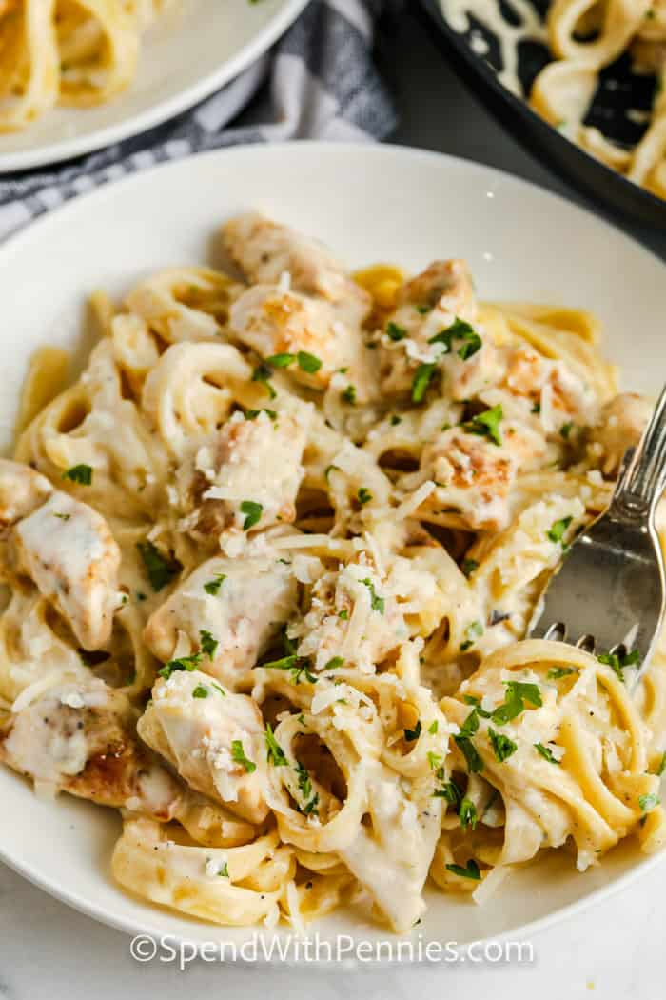

Chicken Alfredo

Description
Easy, creamy, dreamy. This homemade Chicken Alfredo recipe is a delicious 30-minute meal.
Perfect for busy weeknight nights, this recipe is restaurant quality.
Ingredients
- Chicken
- Alfredo Sauce
- Fettuccine
Steps
- Cook pasta: Boil the pasta al dente.
- Cook chicken:Cut the chicken into pieces, season and cook in a skillet.
- Prep sauce:Cook the garlic and butter in the same pan, add the cream & simmer until slightly thickened. Stir in Parmesan cheese & season with salt & pepper.
- Combine:Add chicken & cooked fettuccine to the sauce. Add pasta water to reach the desired consistency.